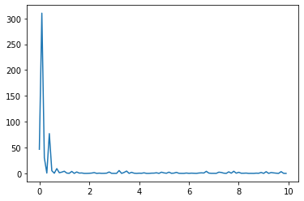
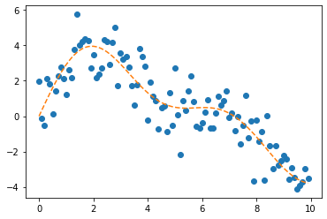
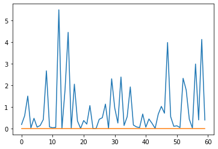
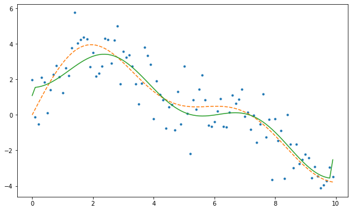
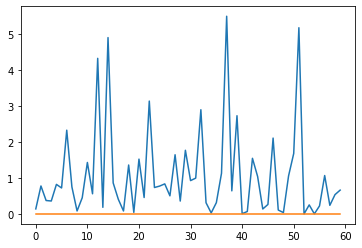
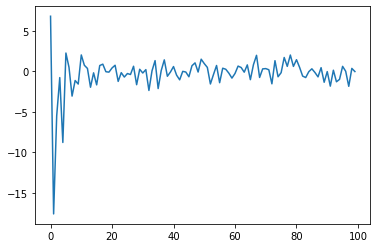
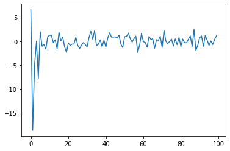
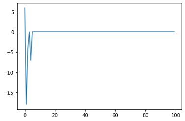

import matplotlib.pyplot as plt
import ebayesthresh_torch
import torchref
Import
torch.set_printoptions(precision=15)import for code check
from scipy.stats import norm
from scipy.optimize import minimize
import numpy as npbeta.cauchy
Function beta for the quasi-Cauchy prior
- Description
Given a value or vector x of values, find the value(s) of the function \(\beta(x) = g(x)/\phi(x) − 1\), where \(g\) is the convolution of the quasi-Cauchy with the normal density \(\phi(x)\).
x가 입력되면 코시 분포와 정규 분포를 혼합해서 함수 베타 구하기
x = torch.tensor([-2.0,1.0,0.0,-4.0,8.0,50.0],dtype=torch.float64)
xtensor([-2., 1., 0., -4., 8., 50.], dtype=torch.float64)x = x.clone().detach().type(torch.float64)
xtensor([-2., 1., 0., -4., 8., 50.], dtype=torch.float64)phix = torch.tensor(norm.pdf(x, loc=0, scale=1))
phixtensor([5.399096651318805e-02, 2.419707245191434e-01, 3.989422804014327e-01,
1.338302257648853e-04, 5.052271083536893e-15, 0.000000000000000e+00],
dtype=torch.float64)j = (x != 0)
jtensor([ True, True, False, True, True, True])beta = x.clone()
betatensor([-2., 1., 0., -4., 8., 50.], dtype=torch.float64)beta = torch.where(j == False, -1/2, beta)
betatensor([-2.000000000000000, 1.000000000000000, -0.500000000000000,
-4.000000000000000, 8.000000000000000, 50.000000000000000],
dtype=torch.float64)beta[j] = (torch.tensor(norm.pdf(0, loc=0, scale=1)) / phix[j] - 1) / (x[j] ** 2) - 1
betatensor([ 5.972640247326628e-01, -3.512787292998718e-01, -5.000000000000000e-01,
1.852473741901080e+02, 1.233796252853370e+12, inf],
dtype=torch.float64)betatensor([ 5.972640247326628e-01, -3.512787292998718e-01, -5.000000000000000e-01,
1.852473741901080e+02, 1.233796252853370e+12, inf],
dtype=torch.float64)- R code
beta.cauchy <- function(x) {
#
# Find the function beta for the mixed normal prior with Cauchy
# tails. It is assumed that the noise variance is equal to one.
#
phix <- dnorm(x)
j <- (x != 0)
beta <- x
beta[!j] <- -1/2
beta[j] <- (dnorm(0)/phix[j] - 1)/x[j]^2 - 1
return(beta)
}결과
- Python
ebayesthresh_torch.beta_cauchy(torch.tensor([-2,1,0,-4,8,50]))tensor([ 5.972640247326628e-01, -3.512787292998718e-01, -5.000000000000000e-01,
1.852473741901080e+02, 1.233796252853370e+12, inf],
dtype=torch.float64)- R
> beta.cauchy(c(-2,1,0,-4,8,50))
[1] 5.972640e-01 -3.512787e-01 -5.000000e-01 1.852474e+02 1.233796e+12 Infbeta.laplace
Function beta for the Laplace prior
- Description
Given a single value or a vector of \(x\) and \(s\), find the value(s) of the function \(\beta(x; s, a) = \frac{g(x; s, a)}{f_n(x; 0, s)}−1\), where \(f_n(x; 0, s)\) is the normal density with mean \(0\) and standard deviation \(s\), and \(g\) is the convolution of the Laplace density with scale parameter a, \(γa(\mu)\), with the normal density \(f_n(x; µ, s)\) with mean mu and standard deviation \(s\).
평균이 \(\mu\)이며, 스케일 파라메터 a를 가진 라플라스와 정규분포의 합성함수 \(g\)와 평균이 0이고 표준편차가s인 f로 계산되는 함수 베타
x = torch.tensor([-2,1,0,-4,8,50])
# x = torch.tensor([2.14])
# s = 1
s = torch.arange(1, 7)
a = 0.5- s는 표준편차
- a는 Laplaxe prior모수, 이 값이 클수록 부포 모양이 뾰족해진다.
x = torch.abs(x).type(torch.float64)
xtensor([ 2., 1., 0., 4., 8., 50.], dtype=torch.float64)xpa = x / s + s * a
xpatensor([ 2.500000000000000, 1.500000000000000, 1.500000000000000,
3.000000000000000, 4.100000000000000, 11.333333333333334],
dtype=torch.float64)xma = x / s - s * a
xmatensor([ 1.500000000000000, -0.500000000000000, -1.500000000000000,
-1.000000000000000, -0.900000000000000, 5.333333333333334],
dtype=torch.float64)rat1 = 1 / xpa
rat1tensor([0.400000000000000, 0.666666666666667, 0.666666666666667,
0.333333333333333, 0.243902439024390, 0.088235294117647],
dtype=torch.float64)xpa_np = np.array(xpa.detach())
rat1[xpa < 35] = torch.tensor(norm.cdf(-xpa_np[xpa_np < 35], loc=0, scale=1) / norm.pdf(xpa_np[xpa_np < 35], loc=0, scale=1))rat2 = 1 / torch.abs(xma)
rat2tensor([0.666666666666667, 2.000000000000000, 0.666666666666667,
1.000000000000000, 1.111111111111111, 0.187500000000000],
dtype=torch.float64)xma_np = np.array(xma.detach())
xma_np[xma_np > 35] = 35
rat2[xma > -35] = torch.tensor(norm.cdf(xma_np[xma_np > -35], loc=0, scale=1) / norm.pdf(xma_np[xma_np > -35], loc=0, scale=1))beta = (a * s / 2) * (rat1 + rat2) - 1
betatensor([ 8.898520296511427e-01, -3.039099526641722e-01, -2.262765426730551e-01,
-3.973015887109854e-02, 1.539501234263774e-01, 5.646947329772137e+06],
dtype=torch.float64)- R code
beta.laplace <- function(x, s = 1, a = 0.5) {
#
# The function beta for the Laplace prior given parameter a and s (sd)
#
x <- abs(x)
xpa <- x/s + s*a
xma <- x/s - s*a
rat1 <- 1/xpa
rat1[xpa < 35] <- pnorm( - xpa[xpa < 35])/dnorm(xpa[xpa < 35])
rat2 <- 1/abs(xma)
xma[xma > 35] <- 35
rat2[xma > -35] <- pnorm(xma[xma > -35])/dnorm(xma[xma > -35])
beta <- (a * s) / 2 * (rat1 + rat2) - 1
return(beta)
}결과
- Python
ebayesthresh_torch.beta_laplace(torch.tensor([-2,1,0,-4,8,50]),s=1)tensor([ 8.898520296511427e-01, -3.800417166060107e-01, -5.618177717731538e-01,
2.854594666723506e+02, 1.026980615772411e+12, 6.344539544172600e+265],
dtype=torch.float64)ebayesthresh_torch.beta_laplace(torch.tensor([-2.0]),s=1,a=0.5)tensor([0.889852029651143], dtype=torch.float64)ebayesthresh_torch.beta_laplace(torch.tensor([-2,1,0,-4,8,50]),s=torch.arange(1, 7),a = 1)tensor([ 8.908210552068985e-01, -1.299192504522433e-01, -8.622910386969129e-02,
-5.203193149163621e-03, 5.421371767485761e-02, 1.124935767773541e+02],
dtype=torch.float64)- R
> beta.laplace(c(-2,1,0,-4,8,50), s=1)
[1] 8.898520e-01 -3.800417e-01 -5.618178e-01 2.854595e+02 1.026981e+12 6.344540e+265
> beta.laplace(-2, s=1, a=0.5)
[1] 0.889852
> beta.laplace(c(-2,1,0,-4,8,50), s=1:6, a=1)
[1] 0.890821055 -0.129919250 -0.086229104 -0.005203193 0.054213718 112.493576777cauchy_medzero
the objective function that has to be zeroed, component by component, to find the posterior median when the quasi-Cauchy prior is used. x is the parameter vector, z is the data vector, w is the weight x and z may be scalars
- quasi-Cauchy prior에서 사후 중앙값 찾기 위한 함수
- x,z는 벡터일수도 있고, 스칼라일 수 도 있다.
x = torch.tensor([-2,1,0,-4,8,50])
# x = torch.tensor(4)
z = torch.tensor([1,0,2,3,-1,-1])
# z = torch.tensor(5)
w = torch.tensor(0.5)hh = z - x
hhtensor([ 3, -1, 2, 7, -9, -51])dnhh = torch.tensor(norm.pdf(hh, loc=0, scale=1))
dnhhtensor([4.431848411938008e-03, 2.419707245191434e-01, 5.399096651318805e-02,
9.134720408364595e-12, 1.027977357166892e-18, 0.000000000000000e+00],
dtype=torch.float64)norm.cdf(hh, loc=0, scale=1)array([9.98650102e-01, 1.58655254e-01, 9.77249868e-01, 1.00000000e+00,
1.12858841e-19, 0.00000000e+00])yleft = torch.tensor(norm.cdf(hh, loc=0, scale=1)) - z * dnhh + ((z * x - 1) * dnhh * torch.tensor(norm.cdf(-x, loc=0, scale=1) )) / torch.tensor(norm.pdf(x, loc=0, scale=1))
ylefttensor([7.535655913337148e-01, 0.000000000000000e+00, 8.016002934071383e-01,
9.999991126709799e-01, 1.644366208342579e-21, nan],
dtype=torch.float64)yright2 = 1 + torch.exp(-z**2 / 2) * (z**2 * (1/w - 1) - 1)
yright2tensor([1.000000000000000, 0.000000000000000, 1.406005859375000,
1.088871955871582, 1.000000000000000, 1.000000000000000])yright2 / 2 - ylefttensor([-0.253565591333715, 0.000000000000000, -0.098597363719638,
-0.455563134735189, 0.500000000000000, nan],
dtype=torch.float64)- R코드
cauchy.medzero <- function(x, z, w) {
#
# the objective function that has to be zeroed, component by
# component, to find the posterior median when the quasi-Cauchy prior
# is used. x is the parameter vector, z is the data vector, w is the
# weight x and z may be scalars
#
hh <- z - x
dnhh <- dnorm(hh)
yleft <- pnorm(hh) - z * dnhh + ((z * x - 1) * dnhh * pnorm( - x))/
dnorm(x)
yright2 <- 1 + exp( - z^2/2) * (z^2 * (1/w - 1) - 1)
return(yright2/2 - yleft)
}결과
- Python
- 벡터, 스칼라일때 가능한지 확인
ebayesthresh_torch.cauchy_medzero(torch.tensor([-2,1,0,-4,8,50]),torch.tensor([1,0,2,3,-1,-1]),0.5)tensor([-0.253565591333715, 0.000000000000000, -0.098597363719638,
-0.455563134735189, 0.500000000000000, nan],
dtype=torch.float64)ebayesthresh_torch.cauchy_medzero(torch.tensor(4),torch.tensor(5),torch.tensor(0.5))tensor(-0.219442442491987, dtype=torch.float64)- R
> cauchy.medzero(c(-2,1,0,-4,8,50),c(1,0,2,3,-1,-1),0.5)
[1] -0.25356559 0.00000000 -0.09859737 -0.45556313 0.50000000 NaN
> cauchy.medzero(4,5,0.5)
[1] -0.2194424cauchy_threshzero
- cauchy 임계값 찾기 위한 것
- 아래에서 반환되는 y가 0에 가깝도록 만들어주는 z를 찾는 과정
z = torch.tensor([1,0,2,3,-1,-1])
# z = 0
# w = 0.5
w = torch.tensor([0.5,0.4,0.3,0.2,0,0.1])y = (torch.tensor(norm.cdf(z, loc=0, scale=1)) - z * torch.tensor(norm.pdf(z, loc=0, scale=1)) - 0.5 - (z**2 * torch.exp(-z**2 / 2) * (1/w - 1)) / 2)
ytensor([-0.203891311626260, 0.000000000000000, -0.262296682131538,
0.285392626219174, -inf, -2.828762020130332],
dtype=torch.float64)- R 코드
cauchy.threshzero <- function(z, w) {
#
# The objective function that has to be zeroed to find the Cauchy
# threshold. z is the putative threshold vector, w is the weight w
# can be a vector
#
y <- pnorm(z) - z * dnorm(z) - 1/2 -
(z^2 * exp( - z^2/2) * (1/w - 1))/2
return(y)
}결과
- Python
ebayesthresh_torch.cauchy_threshzero(torch.tensor([1,0,2,3,-1,-1]),0.5)tensor([-0.203891311626260, 0.000000000000000, 0.098597372042885,
0.435364074104210, -0.402639354725059, -0.402639354725059],
dtype=torch.float64)ebayesthresh_torch.cauchy_threshzero(torch.tensor([1,0,2,3,-1,-1]),torch.tensor([0.5,0.4,0.3,0.2,0,0.1]))tensor([-0.203891311626260, 0.000000000000000, -0.262296682131538,
0.285392626219174, -inf, -2.828762020130332],
dtype=torch.float64)- R
> cauchy.threshzero(c(1,0,2,3,-1,-1),0.5)
[1] -0.20389131 0.00000000 0.09859737 0.43536407 -0.40263935 -0.40263935
cauchy.threshzero(c(1,0,2,3,-1,-1), c(0.5,0.4,0.3,0.2,0,0.1))
[1] -0.2038913 0.0000000 -0.2622967 0.2853926 -Inf -2.8287620ebayesthresh
x = torch.normal(torch.tensor([0] * 90 + [5] * 10, dtype=torch.float32), torch.ones(100, dtype=torch.float32))
# sdev = None
sdev = torch.tensor(1.0,requires_grad=True)
prior="laplace"
a=torch.tensor(0.5,requires_grad=True)
bayesfac=False
verbose=False
threshrule="median"
universalthresh=True
stabadjustment=Nonepr = prior[0:1]
pr'l'if sdev is None: sdev = torch.tensor([float('nan')])
else: sdev = torch.tensor(sdev*1.0,requires_grad=True)UserWarning: To copy construct from a tensor, it is recommended to use sourceTensor.clone().detach() or sourceTensor.clone().detach().requires_grad_(True), rather than torch.tensor(sourceTensor).
else: sdev = torch.tensor(sdev*1.0,requires_grad=True)if len([sdev.item()]) == 1:
if stabadjustment is not None:
raise ValueError("Argument stabadjustment is not applicable when variances are homogeneous.")
if torch.isnan(sdev):
sdev = ebayesthresh_torch.mad(x, center=0)
stabadjustment_condition = True
else:
if pr == "c":
raise ValueError("Standard deviation has to be homogeneous for Cauchy prior.")
if sdev.numel() != x.numel():
raise ValueError("Standard deviation has to be homogeneous or have the same length as observations.")
if stabadjustment is None:
stabadjustment = False
stabadjustment_condition = stabadjustmentif stabadjustment_condition:
sdev = sdev.float()
m_sdev = torch.mean(sdev)
s = sdev / m_sdev
x = x / m_sdev
else:
s = sdevif pr == "l" and a is None:
pp = ebayesthresh_torch.wandafromx(x, s, universalthresh)
w = pp["w"]
a = pp["a"]
else:
w = ebayesthresh_torch.wfromx(x, s, prior, a, universalthresh)if pr != "m" or verbose:
tt = ebayesthresh_torch.tfromw(w, s, prior=prior, bayesfac=bayesfac, a=a)[0]
if stabadjustment_condition:
tcor = tt * m_sdev
else:
tcor = ttif threshrule == "median":
muhat = ebayesthresh_torch.postmed(x, s, w, prior=prior, a=a)
elif threshrule == "mean":
muhat = ebayesthresh_torch.postmean(x, s, w, prior=prior, a=a)
elif threshrule == "hard":
muhat = ebayesthresh_torch.threshld(x, tt)
elif threshrule == "soft":
muhat = ebayesthresh_torch.threshld(x, tt, hard=False)
elif threshrule == "none":
muhat = None
else:
raise ValueError(f"Unknown threshold rule: {threshrule}")muhattensor([-0.000000000000000, -0.000000000000000, 0.000000000000000,
0.000000000000000, -0.000000000000000, 0.000000000000000,
-0.000000000000000, 0.000000000000000, 0.000000000000000,
-0.000000000000000, -0.000000000000000, -0.000000000000000,
0.000000000000000, -0.000000000000000, -0.000000000000000,
0.000000000000000, -0.000000000000000, 0.000000000000000,
0.000000000000000, -0.000000000000000, -0.000000000000000,
-0.000000000000000, -0.000000000000000, 0.000000000000000,
-0.000000000000000, -0.000000000000000, -0.000000000000000,
0.000000000000000, -0.000000000000000, 0.000000000000000,
0.000000000000000, -0.000000000000000, 0.000000000000000,
0.000000000000000, 0.000000000000000, 0.000000000000000,
0.000000000000000, -1.470529670141027, 0.000000000000000,
-0.000000000000000, 0.000000000000000, -0.000000000000000,
-0.000000000000000, -0.000000000000000, 0.000000000000000,
0.000000000000000, -0.000000000000000, 0.000000000000000,
-0.000000000000000, -0.000000000000000, -0.000000000000000,
0.000000000000000, 0.000000000000000, 0.000000000000000,
0.000000000000000, -0.000000000000000, -0.000000000000000,
-0.000000000000000, -0.000000000000000, 0.000000000000000,
0.000000000000000, -0.000000000000000, 0.000000000000000,
-0.000000000000000, -0.000000000000000, -0.000000000000000,
0.000000000000000, 0.000000000000000, 0.000000000000000,
0.000000000000000, -0.000000000000000, -0.000000000000000,
0.000000000000000, -0.000000000000000, -0.000000000000000,
-0.000000000000000, -0.000000000000000, -0.000000000000000,
0.000000000000000, -0.000000000000000, -0.000000000000000,
0.000000000000000, -0.000000000000000, -0.000000000000000,
-1.550813553968652, -0.000000000000000, -0.000000000000000,
-0.000000000000000, -0.000000000000000, -0.000000000000000,
5.005853918856763, 5.533827688719343, 3.196259515963121,
4.243412219223047, 2.092575251401420, 3.941843572458171,
5.833663273143095, 4.743063673607465, 5.411474567778996,
4.007322876479106], dtype=torch.float64, grad_fn=<MulBackward0>)if stabadjustment_condition:
muhat = muhat * m_sdevmuhattensor([-0.000000000000000, -0.000000000000000, 0.000000000000000,
0.000000000000000, -0.000000000000000, 0.000000000000000,
-0.000000000000000, 0.000000000000000, 0.000000000000000,
-0.000000000000000, -0.000000000000000, -0.000000000000000,
0.000000000000000, -0.000000000000000, -0.000000000000000,
0.000000000000000, -0.000000000000000, 0.000000000000000,
0.000000000000000, -0.000000000000000, -0.000000000000000,
-0.000000000000000, -0.000000000000000, 0.000000000000000,
-0.000000000000000, -0.000000000000000, -0.000000000000000,
0.000000000000000, -0.000000000000000, 0.000000000000000,
0.000000000000000, -0.000000000000000, 0.000000000000000,
0.000000000000000, 0.000000000000000, 0.000000000000000,
0.000000000000000, -1.470529670141027, 0.000000000000000,
-0.000000000000000, 0.000000000000000, -0.000000000000000,
-0.000000000000000, -0.000000000000000, 0.000000000000000,
0.000000000000000, -0.000000000000000, 0.000000000000000,
-0.000000000000000, -0.000000000000000, -0.000000000000000,
0.000000000000000, 0.000000000000000, 0.000000000000000,
0.000000000000000, -0.000000000000000, -0.000000000000000,
-0.000000000000000, -0.000000000000000, 0.000000000000000,
0.000000000000000, -0.000000000000000, 0.000000000000000,
-0.000000000000000, -0.000000000000000, -0.000000000000000,
0.000000000000000, 0.000000000000000, 0.000000000000000,
0.000000000000000, -0.000000000000000, -0.000000000000000,
0.000000000000000, -0.000000000000000, -0.000000000000000,
-0.000000000000000, -0.000000000000000, -0.000000000000000,
0.000000000000000, -0.000000000000000, -0.000000000000000,
0.000000000000000, -0.000000000000000, -0.000000000000000,
-1.550813553968652, -0.000000000000000, -0.000000000000000,
-0.000000000000000, -0.000000000000000, -0.000000000000000,
5.005853918856763, 5.533827688719343, 3.196259515963121,
4.243412219223047, 2.092575251401420, 3.941843572458171,
5.833663273143095, 4.743063673607465, 5.411474567778996,
4.007322876479106], dtype=torch.float64, grad_fn=<MulBackward0>)if not verbose:
muhat
else:
retlist = {
'muhat': muhat,
'x': x,
'threshold.sdevscale': tt,
'threshold.origscale': tcor,
'prior': prior,
'w': w,
'a': a,
'bayesfac': bayesfac,
'sdev': sdev,
'threshrule': threshrule
}
if pr == "c":
del retlist['a']
if threshrule == "none":
del retlist['muhat']verbose=TrueretlistNameError: name 'retlist' is not definedR코드
ebayesthresh <- function (x, prior = "laplace", a = 0.5, bayesfac = FALSE,
sdev = NA, verbose = FALSE, threshrule = "median",
universalthresh = TRUE, stabadjustment) {
#
# Given a vector of data x, find the marginal maximum likelihood
# estimator of the mixing weight w, and apply an appropriate
# thresholding rule using this weight.
#
# If the prior is laplace and a=NA, then the inverse scale parameter
# is also found by MML.
#
# Standard deviation sdev can be a vector (heterogeneous variance) or
# a single value (homogeneous variance). If sdev=NA, then it is
# estimated using the function mad(x). Heterogeneous variance is
# allowed only for laplace prior currently.
#
# The thresholding rules allowed are "median", "mean", "hard", "soft"
# and "none"; if "none" is used, then only the parameters are worked
# out.
#
# If hard or soft thresholding is used, the argument "bayesfac"
# specifies whether to use the bayes factor threshold or the
# posterior median threshold.
#
# If universalthresh=TRUE, the thresholds will be upper bounded by
# universal threshold adjusted by standard deviation; otherwise,
# weight w will be searched in [0, 1].
#
# If stabadjustment=TRUE, the observations and standard deviations
# will be first divided by the mean of all given standard deviations
# in case of inefficiency due to large value of standard
# deviation. In the case of homogeneous variance, the standard
# deviations will be normalized to 1 automatically.
#
# If verbose=TRUE then the routine returns a list with several
# arguments, including muhat which is the result of the
# thresholding. If verbose=FALSE then only muhat is returned.
#
# Find the standard deviation if necessary and estimate the parameters
pr <- substring(prior, 1, 1)
if(length(sdev) == 1) {
if(!missing(stabadjustment))
stop(paste("Argument stabadjustment is not applicable when",
"variances are homogeneous."))
if(is.na(sdev)) {
sdev <- mad(x, center = 0)
}
stabadjustment_condition = TRUE
} else{
if(pr == "c")
stop("Standard deviation has to be homogeneous for Cauchy prior.")
if(length(sdev) != length(x))
stop(paste("Standard deviation has to be homogeneous or has the",
"same length as observations."))
if(missing(stabadjustment))
stabadjustment <- FALSE
stabadjustment_condition = stabadjustment
}
if (stabadjustment_condition) {
m_sdev <- mean(sdev)
s <- sdev/m_sdev
x <- x/m_sdev
} else { s <- sdev }
if ((pr == "l") & is.na(a)) {
pp <- wandafromx(x, s, universalthresh)
w <- pp$w
a <- pp$a
}
else
w <- wfromx(x, s, prior = prior, a = a, universalthresh)
if(pr != "m" | verbose) {
tt <- tfromw(w, s, prior = prior, bayesfac = bayesfac, a = a)
if(stabadjustment_condition) {
tcor <- tt * m_sdev
} else {
tcor <- tt
}
}
if(threshrule == "median")
muhat <- postmed(x, s, w, prior = prior, a = a)
if(threshrule == "mean")
muhat <- postmean(x, s, w, prior = prior, a = a)
if(threshrule == "hard")
muhat <- threshld(x, tt)
if(threshrule == "soft")
muhat <- threshld(x, tt, hard = FALSE)
if(threshrule == "none")
muhat <- NA
# Now return desired output
if(stabadjustment_condition) {
muhat <- muhat * m_sdev
}
if(!verbose)
return(muhat)
retlist <- list(muhat = muhat, x = x, threshold.sdevscale = tt,
threshold.origscale = tcor, prior = prior, w = w,
a = a, bayesfac = bayesfac, sdev = sdev,
threshrule = threshrule)
if(pr == "c")
retlist <- retlist[-7]
if(threshrule == "none")
retlist <- retlist[-1]
return(retlist)
}결과
- Python
ebayesthresh_torch.ebayesthresh(x=torch.normal(torch.tensor([0] * 90 + [5] * 10, dtype=torch.float32), torch.ones(100, dtype=torch.float32)), sdev = 1)tensor([-0.000000000000000, 0.000000000000000, -0.000000000000000,
-0.000000000000000, 0.000000000000000, -0.000000000000000,
-0.000000000000000, 0.000000000000000, -0.000000000000000,
-0.000000000000000, -0.000000000000000, -0.000000000000000,
0.000000000000000, 0.000000000000000, 0.000000000000000,
0.000000000000000, -0.000000000000000, 0.000000000000000,
-0.164418213594979, -0.000000000000000, -0.000000000000000,
-0.000000000000000, 0.000000000000000, -0.000000000000000,
-0.000000000000000, -0.000000000000000, -0.000000000000000,
0.000000000000000, -0.000000000000000, 0.000000000000000,
-0.000000000000000, 0.000000000000000, 0.000000000000000,
-0.000000000000000, -0.000000000000000, -0.000000000000000,
0.000000000000000, 0.000000000000000, -0.000000000000000,
0.000000000000000, 0.000000000000000, -0.000000000000000,
-0.000000000000000, -0.000000000000000, 0.000000000000000,
2.599826913097172, -0.000000000000000, -0.000000000000000,
0.000000000000000, -0.000000000000000, -0.000000000000000,
0.000000000000000, 0.000000000000000, -0.000000000000000,
0.000000000000000, 0.000000000000000, -0.000000000000000,
0.000000000000000, 0.000000000000000, -0.000000000000000,
-0.722819235077744, 0.000000000000000, 0.000000000000000,
-0.000000000000000, 0.000000000000000, -0.000000000000000,
-0.000000000000000, -0.000000000000000, 0.000000000000000,
-0.000000000000000, -0.000000000000000, 0.000000000000000,
0.000000000000000, 0.000000000000000, 0.000000000000000,
-0.000000000000000, 0.000000000000000, 0.000000000000000,
-0.000000000000000, 0.000000000000000, 0.000000000000000,
-1.492949053755082, 0.000000000000000, -0.000000000000000,
-0.000000000000000, -0.000000000000000, -0.000000000000000,
-0.000000000000000, 0.000000000000000, -0.000000000000000,
4.385957434819470, 6.336716643835314, 3.709441119024078,
3.223851702304409, 6.918331146069010, 4.836058140567935,
5.867223121041847, 4.259974169736554, 5.624895479149825,
6.157949899783112], dtype=torch.float64, grad_fn=<MulBackward0>)- R
> ebayesthresh(x = rnorm(100, c(rep(0,90), rep(5,10))),
+ prior = "laplace", sdev = 1)
[1] 0.0000000 0.0000000 0.0000000 0.0000000 0.0000000 0.0000000 0.0000000 0.0000000 0.0000000 0.0000000 0.0000000 0.0000000 0.0000000 0.0000000
[15] 0.0000000 0.0000000 0.0000000 0.0000000 0.0000000 0.0000000 0.0000000 0.0000000 0.0000000 0.0000000 0.0000000 0.0000000 0.0000000 0.0000000
[29] 0.0000000 0.0000000 0.0000000 0.0000000 0.0000000 0.0000000 0.0000000 0.0000000 0.0000000 0.0000000 0.0000000 0.0000000 0.0000000 0.0000000
[43] 0.0000000 0.0000000 0.0000000 0.0000000 0.0000000 0.0000000 0.0000000 0.0000000 0.0000000 0.0000000 0.0000000 0.0000000 0.0000000 0.0000000
[57] 0.0000000 0.0000000 0.0000000 0.0000000 0.0000000 0.0000000 0.0000000 0.0000000 0.0000000 0.0000000 0.0000000 0.0000000 0.0000000 0.0000000
[71] 0.0000000 0.0000000 0.0000000 0.0000000 0.0000000 0.0000000 0.0000000 0.0000000 0.0000000 0.0000000 0.0000000 0.0000000 0.0000000 -0.4480064
[85] 0.0000000 0.0000000 0.0000000 0.0000000 0.0000000 0.0000000 5.1534865 6.2732386 4.4612851 5.9931848 4.5828731 4.6154038 4.8247775 3.6219544
[99] 4.4480080 5.4084453isotone
Isotonic Regression은 입력 변수에 따른 출력 변수의 단조 증가(monotonic increasing) 또는 감소(monotonic decreasing) 패턴을 찾는 방법
beta = ebayesthresh_torch.beta_cauchy(torch.tensor([-2,1,0,-4]))
w = torch.ones(len(beta))
aa = w + 1/beta
x = w + aa
wt = 1/aa**2
increasing = Falseif wt is None:
wt = torch.ones_like(x)nn = len(x)
nn4ebayesthresh_torch.beta_cauchy(torch.tensor([-2,1,0,-4]))tensor([ 0.597264024732663, -0.351278729299872, -0.500000000000000,
185.247374190108047], dtype=torch.float64)if nn == 1:
x = x
if not increasing:
x = -xip = torch.arange(nn)
iptensor([0, 1, 2, 3])dx = torch.diff(x)
dxtensor([ 4.521043661450835, -0.846742249361595, -2.005398187177399],
dtype=torch.float64)nx = len(x)
nx4while (nx > 1) and (torch.min(dx) < 0):
jmax = torch.where((torch.cat([dx <= 0, torch.tensor([False])]) & torch.cat([torch.tensor([True]), dx > 0])))[0]
jmin = torch.where((torch.cat([dx > 0, torch.tensor([True])]) & torch.cat([torch.tensor([False]), dx <= 0])))[0]
for jb in range(len(jmax)):
ind = torch.arange(jmax[jb], jmin[jb] + 1)
wtn = torch.sum(wt[ind])
x[jmax[jb]] = torch.sum(wt[ind] * x[ind]) / wtn
wt[jmax[jb]] = wtn
x[jmax[jb] + 1:jmin[jb] + 1] = torch.nan
ind = ~torch.isnan(x)
x = x[ind]
wt = wt[ind]
ip = ip[ind]
dx = torch.diff(x)
nx = len(x)jj = torch.zeros(nn, dtype=torch.int32)
jjtensor([0, 0, 0, 0], dtype=torch.int32)jj[ip] = 1
jjtensor([1, 1, 0, 0], dtype=torch.int32)z = x[torch.cumsum(jj, dim=0) - 1]
ztensor([-3.674301412089240, -0.760411047043364, -0.760411047043364,
-0.760411047043364], dtype=torch.float64)if not increasing:
z = -zztensor([3.674301412089240, 0.760411047043364, 0.760411047043364,
0.760411047043364], dtype=torch.float64)R코드
isotone <- function(x, wt = rep(1, length(x)), increasing = FALSE) {
#
# find the weighted least squares isotone fit to the
# sequence x, the weights given by the sequence wt
#
# if increasing == TRUE the curve is set to be increasing,
# otherwise to be decreasing
#
# the vector ip contains the indices on the original scale of the
# breaks in the regression at each stage
#
nn <- length(x)
if(nn == 1)
return(x)
if(!increasing)
x <- - x
ip <- (1:nn)
dx <- diff(x)
nx <- length(x)
while((nx > 1) && (min(dx) < 0)) {
#
# do single pool-adjacent-violators step
#
# find all local minima and maxima
#
jmax <- (1:nx)[c(dx <= 0, FALSE) & c(TRUE, dx > 0)]
jmin <- (1:nx)[c(dx > 0, TRUE) & c(FALSE, dx <= 0)]
# do pav step for each pair of maxima and minima
#
# add up weights within subsequence that is pooled
# set first element of subsequence to the weighted average
# the first weight to the sum of the weights within the subsequence
# and remainder of the subsequence to NA
#
for(jb in (1:length(jmax))) {
ind <- (jmax[jb]:jmin[jb])
wtn <- sum(wt[ind])
x[jmax[jb]] <- sum(wt[ind] * x[ind])/wtn
wt[jmax[jb]] <- wtn
x[(jmax[jb] + 1):jmin[jb]] <- NA
}
#
# clean up within iteration, eliminating the parts of sequences that
# were set to NA
#
ind <- !is.na(x)
x <- x[ind]
wt <- wt[ind]
ip <- ip[ind]
dx <- diff(x)
nx <- length(x)
}
#
# final cleanup: reconstruct z at all points by repeating the pooled
# values the appropriate number of times
#
jj <- rep(0, nn)
jj[ip] <- 1
z <- x[cumsum(jj)]
if(!increasing)
z <- - z
return(z)
}결과
- Python
beta = ebayesthresh_torch.beta_cauchy(torch.tensor([-2,1,0,-4]))
w = torch.ones(len(beta))
aa = w + 1/beta
ps = w + aa
ww = 1/aa**2
wnew = ebayesthresh_torch.isotone(ps, ww, increasing = False)
wnew[3.67430141208924, 0.760411047043364, 0.760411047043364, 0.760411047043364]R
> beta <- beta.cauchy(c(-2,1,0,-4))
> w <- rep(1, length(x))
> aa = w + 1/beta
> ps = w + aa
> ww = 1/aa**2
> wnew = isotone(ps, ww, increasing = FALSE)
> wnew
[1] 3.674301 0.760411 0.760411 0.760411laplace_threshzero
x = torch.tensor([-2,1,0,-4,8,50])
s = 1
w = 0.5
a = 0.5a = min(a, 20)
a0.5xma = x / s - s * a
xmatensor([-2.500000000000000, 0.500000000000000, -0.500000000000000,
-4.500000000000000, 7.500000000000000, 49.500000000000000])xma_np = np.array(xma.detach())
z = torch.tensor(norm.cdf(xma_np, loc=0, scale=1)) - (1 / a) * (1 / s * torch.tensor(norm.pdf(xma_np, loc=0, scale=1))) * (1 / w + ebayesthresh_torch.beta_laplace(x, s, a))
ztensor([-0.095098724189572, -0.449199823501264, -0.704130653528599,
-0.009185957714915, 0.499999999999483, 1.000000000000000],
dtype=torch.float64)R코드
laplace.threshzero <- function(x, s = 1, w = 0.5, a = 0.5) {
#
# The function that has to be zeroed to find the threshold with the
# Laplace prior. Only allow a < 20 for input value.
#
a <- min(a, 20)
xma <- x/s - s*a
z <- pnorm(xma) - 1/a * (1/s*dnorm(xma)) * (1/w + beta.laplace(x, s, a))
return(z)
}결과
- Python
ebayesthresh_torch.laplace_threshzero(torch.tensor([-2,1,0,-4,8,50]), s = 1, w = 0.5, a = 0.5)tensor([-0.095098724189572, -0.449199823501264, -0.704130653528599,
-0.009185957714915, 0.499999999999483, 1.000000000000000],
dtype=torch.float64)ebayesthresh_torch.laplace_threshzero(torch.tensor(-5), s = 1, w = 0.5, a = 0.5)tensor(-0.003369167953292, dtype=torch.float64)- R
> laplace.threshzero(c(-2,1,0,-4,8,50), s = 1, w = 0.5, a = 0.5)
[1] -0.095098724 -0.449199824 -0.704130654 -0.009185958 0.500000000 1.000000000
> laplace.threshzero(-5, s = 1, w = 0.5, a = 0.5)
[1] -0.003369168negloglik_laplace
Marginal negative log likelihood function for laplace prior.
- 라플라스 프라이어에 대한 한계음의로그우도함수 계산
xpar = torch.tensor([0.5,0.6,0.3])
xx = torch.tensor([1,2,3,4,5])
ss = torch.tensor([1])
tlo = torch.sqrt(2 * torch.log(torch.tensor(len([1, 2, 3, 4, 5])).float())) * 1
thi = torch.tensor([0.0,0.0,0.0])a = xpar[1]
atensor(0.600000023841858)wlo = ebayesthresh_torch.wfromt(thi, ss, a=a)
wlotensor([1., 1., 1.], dtype=torch.float64)whi = ebayesthresh_torch.wfromt(tlo, ss, a=a)
whitensor([0.445282361582141], dtype=torch.float64)wlo = torch.max(wlo)
wlotensor(1., dtype=torch.float64)whi = torch.min(whi)
whitensor(0.445282361582141, dtype=torch.float64)loglik = torch.sum(torch.log(1 + (xpar[0] * (whi - wlo) + wlo) *
ebayesthresh_torch.beta_laplace(xx, ss, a)))
-logliktensor(-16.797274811699509, dtype=torch.float64)R코드
negloglik.laplace <- function(xpar, xx, ss, tlo, thi) {
#
# Marginal negative log likelihood function for laplace prior.
# Constraints for thresholds need to be passed externally.
#
# xx :data
# xpar :vector of two parameters:
# xpar[1] : a value between [0, 1] which will be adjusted to range of w
# xpar[2] : inverse scale (rate) parameter ("a")
# ss :vector of standard deviations
# tlo :lower bound of thresholds
# thi :upper bound of thresholds
#
a <- xpar[2]
# Calculate the range of w given a, using negative monotonicity
# between w and t
wlo <- wfromt(thi, ss, a = a)
whi <- wfromt(tlo, ss, a = a)
wlo <- max(wlo)
whi <- min(whi)
loglik <- sum(log(1 + (xpar[1] * (whi - wlo) + wlo) *
beta.laplace(xx, ss, a)))
return(-loglik)
}결과
- Python
xpar = torch.tensor([0.5,0.6,0.3])
xx = torch.tensor([1,2,3,4,5])
ss = torch.tensor([1])
tlo = torch.sqrt(2 * torch.log(torch.tensor(len([1, 2, 3, 4, 5])).float())) * 1
thi = torch.tensor([0.0,0.0,0.0])ebayesthresh_torch.negloglik_laplace(xpar, xx, ss, tlo, thi)tensor(-16.797274811699509, dtype=torch.float64)- R
> xpar <- c(0.5, 0.6, 0.3)
> xx <- c(1, 2, 3, 4, 5)
> ss <- c(1)
> tlo <- sqrt(2 * log(length(c(1, 2, 3, 4, 5)))) * 1
> thi <- c(0, 0, 0)
> negloglik.laplace(xpar, xx, ss, tlo, thi)
[1] -16.79727postmean
Given a single value or a vector of data and sampling standard deviations (sd equals 1 for Cauchy prior), find the corresponding posterior mean estimate(s) of the underlying signal value(s).
- 적절한 사후 평균 찾기
x = torch.tensor([-2.0,1.0,0.0,-4.0,8.0,50.0])
s = torch.tensor([1.0])
w = torch.tensor([0.5])
# prior = "cauchy"
prior = "laplace"
a = 0.5pr = prior[0:1]
pr'l'if pr == "l":
mutilde = ebayesthresh_torch.postmean_laplace(x, s, w, a=a)
elif pr == "c":
if torch.any(s != 1):
raise ValueError("Only standard deviation of 1 is allowed for Cauchy prior.")
mutilde = ebayesthresh_torch.postmean_cauchy(x, w)
else:
raise ValueError("Unknown prior type.")mutildetensor([-1.011589622421743, 0.270953303334685, 0.000000000000000,
-3.488009240410718, 7.499999999992725, 49.500000000000000],
dtype=torch.float64)R코드
postmean <- function(x, s = 1, w = 0.5, prior = "laplace", a = 0.5) {
#
# Find the posterior mean for the appropriate prior for
# given x, s (sd), w and a.
#
pr <- substring(prior, 1, 1)
if(pr == "l")
mutilde <- postmean.laplace(x, s, w, a = a)
if(pr == "c"){
if(any(s != 1))
stop(paste("Only standard deviation of 1 is allowed",
"for Cauchy prior."))
mutilde <- postmean.cauchy(x, w)
}
return(mutilde)
}결과
- Python
ebayesthresh_torch.postmean(torch.tensor([-2.0,1.0,0.0,-4.0,8.0,50.0]), s=1, w = 0.5, prior = "laplace", a = 0.5)tensor([-1.011589622421743, 0.270953303334685, 0.000000000000000,
-3.488009240410718, 7.499999999992725, 49.500000000000000],
dtype=torch.float64)- R
> postmean(c(-2,1,0,-4,8,50), s=1, w = 0.5, prior = "laplace", a = 0.5)
[1] -1.0115896 0.2709533 0.0000000 -3.4880092 7.5000000 49.5000000postmean_cauchy
Find the posterior mean for the quasi-Cauchy prior with mixing weight w given data x, which may be a scalar or a vector.
- quasi-Cauch에 대한 사후 평균 구하기
x =torch.tensor([-2.0,1.0,0.0,-4.0,8.0,50.0], dtype=float)
w = 0.5ind = torch.nonzero(x == 0)
indtensor([[2]])x = x[x != 0]
xtensor([-2., 1., -4., 8., 50.], dtype=torch.float64)ex = torch.exp(-x**2/2)
extensor([1.353352832366127e-01, 6.065306597126334e-01, 3.354626279025119e-04,
1.266416554909418e-14, 0.000000000000000e+00], dtype=torch.float64)z = w * (x - (2 * (1 - ex))/x)
ztensor([-0.567667641618306, 0.106530659712633, -1.750083865656976,
3.875000000000002, 24.980000000000000], dtype=torch.float64)z = z / (w * (1 - ex) + (1 - w) * ex * x**2)
ztensor([-0.807489729485063, 0.213061319425267, -3.482643281306042,
7.749999999993821, 49.960000000000001], dtype=torch.float64)muhat = z
muhattensor([-0.807489729485063, 0.213061319425267, -3.482643281306042,
7.749999999993821, 49.960000000000001], dtype=torch.float64)muhat[ind] = torch.tensor([0.0], dtype=float)muhattensor([-0.807489729485063, 0.213061319425267, 0.000000000000000,
7.749999999993821, 49.960000000000001], dtype=torch.float64)R코드
postmean.cauchy <- function(x, w) {
#
# Find the posterior mean for the quasi-Cauchy prior with mixing
# weight w given data x, which may be a scalar or a vector.
#
muhat <- x
ind <- (x == 0)
x <- x[!ind]
ex <- exp( - x^2/2)
z <- w * (x - (2 * (1 - ex))/x)
z <- z/(w * (1 - ex) + (1 - w) * ex * x^2)
muhat[!ind] <- z
return(muhat)
}결과
- Python
ebayesthresh_torch.postmean_cauchy(torch.tensor([-2,1,0,-4,8,50]),0.5)tensor([-0.807489693164825, 0.213061332702637, 0.000000000000000,
7.750000000000000, 49.959999084472656])- R
> postmean.cauchy(c(-2,1,0,-4,8,50),0.5)
[1] -0.8074897 0.2130613 0.0000000 -3.4826433 7.7500000 49.9600000postmean.laplace
Find the posterior mean for the double exponential prior for given \(x, s (sd), w\), and \(a\).
- 이전 지수 분포에 대한 사후 평균
x = torch.tensor([-2,1,0,-4,8,50])
s = 1
w = 0.5
a = 0.5a = min(a, 20)
a0.5w_post = ebayesthresh_torch.wpost_laplace(w, x, s, a)
w_posttensor([0.653961521302972, 0.382700153299694, 0.304677821507423,
0.996521248676984, 0.999999999999026, 1.000000000000000],
dtype=torch.float64)sx = torch.sign(x)
sxtensor([-1, 1, 0, -1, 1, 1])x = torch.abs(x)
xtensor([ 2, 1, 0, 4, 8, 50])xpa = x / s + s * a
xpatensor([ 2.500000000000000, 1.500000000000000, 0.500000000000000,
4.500000000000000, 8.500000000000000, 50.500000000000000])xma = x / s - s * a
xmatensor([ 1.500000000000000, 0.500000000000000, -0.500000000000000,
3.500000000000000, 7.500000000000000, 49.500000000000000])xpa = torch.minimum(xpa, torch.tensor(35.0))
xpatensor([ 2.500000000000000, 1.500000000000000, 0.500000000000000,
4.500000000000000, 8.500000000000000, 35.000000000000000])xma = torch.maximum(xma, torch.tensor(-35.0))
xmatensor([ 1.500000000000000, 0.500000000000000, -0.500000000000000,
3.500000000000000, 7.500000000000000, 49.500000000000000])cp1 = torch.tensor(norm.cdf(xma, loc=0, scale=1))
cp1tensor([0.933192798731142, 0.691462461274013, 0.308537538725987,
0.999767370920964, 0.999999999999968, 1.000000000000000],
dtype=torch.float64)cp2 = torch.tensor(norm.cdf(-xpa, loc=0, scale=1))
cp2tensor([ 6.209665325776132e-03, 6.680720126885807e-02, 3.085375387259869e-01,
3.397673124730053e-06, 9.479534822203250e-18, 1.124910706472406e-268],
dtype=torch.float64)ef = torch.exp(torch.minimum(2 * a * x, torch.tensor(100.0, dtype=torch.float32)))
eftensor([7.389056205749512e+00, 2.718281745910645e+00, 1.000000000000000e+00,
5.459814834594727e+01, 2.980958007812500e+03, 5.184705457665547e+21])postmean_cond = x - a * s**2 * (2 * cp1 / (cp1 + ef * cp2) - 1)
postmean_condtensor([ 1.546864134156123, 0.708004167227234, 0.000000000000000,
3.500185515403230, 7.500000000000028, 49.500000000000000],
dtype=torch.float64)sx * w_post * postmean_condtensor([-1.011589622421743, 0.270953303334685, 0.000000000000000,
-3.488009240410718, 7.499999999992725, 49.500000000000000],
dtype=torch.float64)R코드
postmean.laplace <- function(x, s = 1, w = 0.5, a = 0.5) {
#
# Find the posterior mean for the double exponential prior for
# given x, s (sd), w and a.
#
# Only allow a < 20 for input value.
a <- min(a, 20)
# First find the probability of being non-zero
wpost <- wpost.laplace(w, x, s, a)
# Now find the posterior mean conditional on being non-zero
sx <- sign(x)
x <- abs(x)
xpa <- x/s + s*a
xma <- x/s - s*a
xpa[xpa > 35] <- 35
xma[xma < -35] <- -35
cp1 <- pnorm(xma)
cp2 <- pnorm( - xpa)
ef <- exp(pmin(2 * a * x, 100))
postmeancond <- x - a * s^2 * ( 2 * cp1/(cp1 + ef * cp2) - 1)
# Calculate posterior mean and return
return(sx * wpost * postmeancond)
}결과
- Python
ebayesthresh_torch.postmean_laplace(torch.tensor([-2.0,1.0,0.0,-4.0,8.0,50.0]))tensor([-1.011589622421743, 0.270953303334685, 0.000000000000000,
-3.488009240410718, 7.499999999992725, 49.500000000000000],
dtype=torch.float64)- R
> postmean.laplace(c(-2,1,0,-4,8,50))
[1] -1.0115896 0.2709533 0.0000000 -3.4880092 7.5000000 49.5000000postmed
Description
Given a single value or a vector of data and sampling standard deviations (sd is 1 for Cauchy prior), find the corresponding posterior median estimate(s) of the underlying signal value(s).
사후 확률 중앙값 추정치 구하기
x = torch.tensor([1.5, 2.5, 3.5])
s = 1
w = 0.5
prior = "laplace"
a = 0.5pr = prior[0:1]
pr'l'if pr == "l":
muhat = ebayesthresh_torch.postmed_laplace(x, s, w, a)
elif pr == "c":
if np.any(s != 1):
raise ValueError("Only standard deviation of 1 is allowed for Cauchy prior.")
muhat = ebayesthresh_torch.postmed_cauchy(x, w)
else:
raise ValueError(f"Unknown prior: {prior}")muhattensor([0.000000000000000, 1.734132351356471, 2.978157631290933],
dtype=torch.float64)R코드
postmed <- function (x, s = 1, w = 0.5, prior = "laplace", a = 0.5) {
#
# Find the posterior median for the appropriate prior for
# given x, s (sd), w and a.
#
pr <- substring(prior, 1, 1)
if(pr == "l")
muhat <- postmed.laplace(x, s, w, a)
if(pr == "c") {
if(any(s != 1))
stop(paste("Only standard deviation of 1 is allowed",
"for Cauchy prior."))
muhat <- postmed.cauchy(x, w)
}
return(muhat)
}결과
- Python
ebayesthresh_torch.postmed(x = torch.tensor([1.5, 2.5, 3.5]))tensor([0.000000000000000, 1.734132351356471, 2.978157631290933],
dtype=torch.float64)- R
postmed(x=c(1.5, 2.5, 3.5))
[1] 0.000000 1.734132 2.978158postmed_cauchy
x = torch.tensor([10, 15, 20, 25])
w = 0.5nx = len(x)
nx4zest = torch.full((nx,), float('nan'))
zesttensor([nan, nan, nan, nan])w = torch.full((nx,), w)
wtensor([0.500000000000000, 0.500000000000000, 0.500000000000000,
0.500000000000000])ax = torch.abs(x)
axtensor([10, 15, 20, 25])j = ax < 20
jtensor([ True, True, False, False])zest[~j] = ax[~j] - 2 / ax[~j]
zesttensor([ nan, nan, 19.899999618530273,
24.920000076293945])torch.zeros(torch.sum(j))tensor([0., 0.])torch.zeros(torch.sum(j)).shape[0]2if torch.sum(j) > 0:
zest[j] = ebayesthresh_torch.vecbinsolv(zf=torch.zeros(torch.sum(j)),
fun=ebayesthresh_torch.cauchy_medzero,
tlo=0, thi=torch.max(ax[j]), z=ax[j], w=w[j])zest[zest < 1e-7] = 0
zesttensor([ 9.800643920898438, 14.866861343383789, 19.899999618530273,
24.920000076293945])zest = torch.sign(x) * zest
zesttensor([ 9.800643920898438, 14.866861343383789, 19.899999618530273,
24.920000076293945])R코드
postmed.cauchy <- function(x, w) {
#
# find the posterior median of the Cauchy prior with mixing weight w,
# pointwise for each of the data points x
#
nx <- length(x)
zest <- rep(NA, length(x))
w <- rep(w, length.out = nx)
ax <- abs(x)
j <- (ax < 20)
zest[!j] <- ax[!j] - 2/ax[!j]
if(sum(j) > 0) {
zest[j] <- vecbinsolv(zf = rep(0, sum(j)), fun = cauchy.medzero,
tlo = 0, thi = max(ax[j]), z = ax[j],
w = w[j])
}
zest[zest < 1e-007] <- 0
zest <- sign(x) * zest
return(zest)결과
- Python
ebayesthresh_torch.postmed_cauchy(x=torch.tensor([10.0, 15.0, 20.0, 25.0]), w=0.5)tensor([ 9.800643920898438, 14.866861343383789, 19.899999618530273,
24.920000076293945])- R
> postmed.cauchy(x=c(10, 15, 20, 25),w=0.5)
[1] 9.800643 14.866861 19.900000 24.920000postmed_laplace
x = torch.tensor([1.5, 2.5, 3.5])
s = 1
w = 0.5
a = 0.5a = min(a, 20)
a0.5sx = torch.sign(x)
sxtensor([1., 1., 1.])x = torch.abs(x)
xtensor([1.500000000000000, 2.500000000000000, 3.500000000000000])xma = x / s - s * a
xmatensor([1., 2., 3.])xma_np = np.array(xma.detach())
zz = 1 / a * (1 / s * torch.tensor(norm.pdf(xma_np, loc=0, scale=1))) * (1 / w + ebayesthresh_torch.beta_laplace(x, s, a))
zztensor([0.955593330923010, 0.604829429361236, 0.508713151551759],
dtype=torch.float64)zz[xma > 25] = 0.5
zztensor([0.955593330923010, 0.604829429361236, 0.508713151551759],
dtype=torch.float64)tmp = np.array((torch.minimum(zz, torch.tensor(1))).detach())
mucor = torch.tensor(norm.ppf(tmp))
mucortensor([1.701690841545193, 0.265867648643529, 0.021842368709067],
dtype=torch.float64)muhat = sx * torch.maximum(torch.tensor(0), xma - mucor) * s
muhattensor([0.000000000000000, 1.734132351356471, 2.978157631290933],
dtype=torch.float64)R코드
postmed.laplace <- function(x, s = 1, w = 0.5, a = 0.5) {
#
# Find the posterior median for the Laplace prior for
# given x (observations), s (sd), w and a.
#
# Only allow a < 20 for input value
a <- min(a, 20)
# Work with the absolute value of x, and for x > 25 use the approximation
# to dnorm(x-a)*beta.laplace(x, a)
sx <- sign(x)
x <- abs(x)
xma <- x/s - s*a
zz <- 1/a * (1/s*dnorm(xma)) * (1/w + beta.laplace(x, s, a))
zz[xma > 25] <- 1/2
mucor <- qnorm(pmin(zz, 1))
muhat <- sx * pmax(0, xma - mucor) * s
return(muhat)
}결과
- Python
ebayesthresh_torch.postmed_laplace(x = torch.tensor([1.5, 2.5, 3.5]))tensor([0.000000000000000, 1.734132351356471, 2.978157631290933],
dtype=torch.float64)- R
> postmed.laplace(x=c(1.5, 2.5, 3.5), s = 1, w = 0.5, a = 0.5)
[1] 0.000000 1.734132 2.978158threshld
임계값 t를 이용해서 데이터 조정
x = torch.tensor(range(-5,5))
t=1.4
hard=Falseif hard:
z = x * (torch.abs(x) >= t)
else:
z = torch.sign(x) * torch.maximum(torch.tensor(0.0), torch.abs(x) - t)ztensor([-3.599999904632568, -2.599999904632568, -1.600000023841858,
-0.600000023841858, -0.000000000000000, 0.000000000000000,
0.000000000000000, 0.600000023841858, 1.600000023841858,
2.599999904632568])R코드
threshld <- function(x, t, hard = TRUE) {
#
# threshold the data x using threshold t
# if hard=TRUE use hard thresholding
# if hard=FALSE use soft thresholding
if(hard) z <- x * (abs(x) >= t) else {
z <- sign(x) * pmax(0, abs(x) - t)
}
return(z)
}결과
- Python
ebayesthresh_torch.threshld(torch.tensor(range(-5,5)), t=1.4, hard=False)tensor([-3.599999904632568, -2.599999904632568, -1.600000023841858,
-0.600000023841858, -0.000000000000000, 0.000000000000000,
0.000000000000000, 0.600000023841858, 1.600000023841858,
2.599999904632568])- R
> threshld(as.array(seq(-5, 5)), t=1.4, hard=FALSE)
[1] -3.6 -2.6 -1.6 -0.6 0.0 0.0 0.0 0.6 1.6 2.6 3.6wandafromx
Given a vector of data and a single value or vector of sampling standard deviations, find the marginal maximum likelihood choice of both weight and scale factor under the Laplace prior
x = torch.tensor([-2,1,0,-4,8], dtype=float)
s = 1
universalthresh = Trueif universalthresh:
thi = torch.sqrt(2 * torch.log(torch.tensor(len(x)))) * s
else:
thi = torch.infthitensor(1.794122576713562)if isinstance(s, int):
tlo = torch.zeros(len(str(s)))
else:
tlo = torch.zeros(len(s))tlotensor([0.])lo = torch.tensor([0, 0.04])
lotensor([0.000000000000000, 0.039999999105930])hi = torch.tensor([1, 3])
hitensor([1, 3])startpar = torch.tensor([0.5, 0.5])
startpartensor([0.500000000000000, 0.500000000000000])if 'optim' in globals():
result = minimize(ebayesthresh_torch.negloglik_laplace, startpar, method='L-BFGS-B', bounds=[(lo[0], hi[0]), (lo[1], hi[1])], args=(x, s, tlo, thi))
uu = result.x
else:
result = minimize(ebayesthresh_torch.negloglik_laplace, startpar, bounds=[(lo[0], hi[0]), (lo[1], hi[1])], args=(x, s, tlo, thi))
uu = result.xa = uu[1]
a0.30010822252477337wlo = ebayesthresh_torch.wfromt(thi, s, a=a)
wlotensor(0.497624103823530, dtype=torch.float64)whi = ebayesthresh_torch.wfromt(tlo, s, a=a)
whitensor([1.], dtype=torch.float64)wlo = torch.max(wlo)
wlotensor(0.497624103823530, dtype=torch.float64)whi = torch.min(whi)
whitensor(1., dtype=torch.float64)w = uu[0] * (whi - wlo) + wlo
wtensor(0.846681050730532, dtype=torch.float64)R코드
wandafromx <- function(x, s = 1, universalthresh = TRUE) {
#
# Find the marginal max lik estimators of w and a given standard
# deviation s, using a bivariate optimization;
#
# If universalthresh=TRUE, the thresholds will be upper bounded by
# universal threshold adjusted by standard deviation. The threshold
# is constrained to lie between 0 and sqrt ( 2 log (n)) *
# s. Otherwise, threshold can take any nonnegative value;
#
# If running R, the routine optim is used; in S-PLUS the routine is
# nlminb.
#
# Range for thresholds
if(universalthresh) {
thi <- sqrt(2 * log(length(x))) * s
} else{
thi <- Inf
}
tlo <- rep(0, length(s))
lo <- c(0,0.04)
hi <- c(1,3)
startpar <- c(0.5,0.5)
if (exists("optim")) {
uu <- optim(startpar, negloglik.laplace, method="L-BFGS-B",
lower = lo, upper = hi, xx = x, ss = s, thi = thi,
tlo = tlo)
uu <- uu$par
}
else {
uu <- nlminb(startpar, negloglik.laplace, lower = lo,
upper = hi, xx = x, ss = s, thi = thi, tlo = tlo)
uu <- uu$parameters
}
a <- uu[2]
wlo <- wfromt(thi, s, a = a)
whi <- wfromt(tlo, s, a = a)
wlo <- max(wlo)
whi <- min(whi)
w <- uu[1]*(whi - wlo) + wlo
return(list(w=w, a=a))
}결과
- Pythom
ebayesthresh_torch.wandafromx(torch.tensor([-2,1,0,-4,8,50], dtype=float)){'w': tensor(1., dtype=torch.float64), 'a': 0.41641347740360435}ebayesthresh_torch.wandafromx(torch.tensor([-2,1,0,-4,8], dtype=float)){'w': tensor(0.846681050730532, dtype=torch.float64), 'a': 0.30010822252477337}- R
> wandafromx(c(-2,1,0,-4,8,50))
$w
[1] 1
$a
[1] 0.4163946
> wandafromx(c(-2,1,0,-4,8))
$w
[1] 0.8466808
$a
[1] 0.3001091Mad(Median Absolute Deviation)
중앙값 절대 편차, 분산이나 퍼진 정도 확인 가능
결과
- Python
ebayesthresh_torch.mad(torch.tensor([1, 2, 3, 3, 4, 4, 4, 5, 5.5, 6, 6, 6.5, 7, 7, 7.5, 8, 9, 12, 52, 90]))tensor(2.965199947357178)- R
> mad(c(1, 2, 3, 3, 4, 4, 4, 5, 5.5, 6, 6, 6.5, 7, 7, 7.5, 8, 9, 12, 52, 90))
[1] 2.9652wfromt
Description
Given a value or vector of thresholds and sampling standard deviations (sd equals 1 for Cauchy prior), find the mixing weight for which this is(these are) the threshold(s) of the posterior median estimator. If a vector of threshold values is provided, the vector of corresponding weights is returned.
주어진 임계값과 표준편차에 대해, posterior median estimator에서 이 임계값이 나오도록 하는 혼합 가중치를 계산하는 함수가 제공된다.
# tt = np.array([2,3,5])
tt = torch.tensor(2.14, dtype=torch.float64)
s = 1
prior = 'laplace"'
a = 0.5pr = prior[0:1]
pr'l'if pr == "l":
tma = (tt / s - s * a).clone().detach().type(torch.float64)
wi = 1 / torch.abs(tma)
wi[tma > -35] = torch.tensor(norm.cdf(tma[tma > -35], loc=0, scale=1)/norm.pdf(tma[tma > -35], loc=0, scale=1))
wi = a * s * wi - ebayesthresh_torch.beta_laplace(tt, s, a)if pr == "c":
dnz = norm.pdf(tt, loc=0, scale=1)
wi = 1 + (torch.tensor(norm.cdf(tt, loc=0, scale=1)) - tt * dnz - 1/2) / (torch.sqrt(torch.tensor(torch.pi/2)) * dnz * tt**2)
wi[~torch.isfinite(wi)] = 11 / witensor(0.312639310177825, dtype=torch.float64)- R코드
wfromt <- function(tt, s = 1, prior = "laplace", a = 0.5) {
#
# Find the weight that has posterior median threshold tt,
# given s (sd) and a.
#
pr <- substring(prior, 1, 1)
if(pr == "l"){
tma <- tt/s - s*a
wi <- 1/abs(tma)
wi[tma > -35] <- pnorm(tma[tma > -35])/dnorm(tma[tma > -35])
wi <- a * s * wi - beta.laplace(tt, s, a)
}
if(pr == "c") {
dnz <- dnorm(tt)
wi <- 1 + (pnorm(tt) - tt * dnz - 1/2)/
(sqrt(pi/2) * dnz * tt^2)
wi[!is.finite(wi)] <- 1
}
1/wi
}결과
- Python
ebayesthresh_torch.wfromt(torch.tensor([2,3,5]),prior='cachy')tensor([4.229634032914113e-01, 9.337993365820978e-02, 9.315908844505263e-05],
dtype=torch.float64)ebayesthresh_torch.wfromt(torch.tensor(2),prior='cachy')tensor(0.422963400115950, dtype=torch.float64)ebayesthresh_torch.wfromt(torch.tensor(2),prior='laplace')tensor(0.368633767549335, dtype=torch.float64)- R
> wfromt(c(2,3,5),prior='cachy')
[1] 4.229634e-01 9.337993e-02 9.315909e-05
> wfromt(2,prior='cachy')
[1] 0.4229634
> wfromt(2,prior='laplace')
[1] 0.3686338wfromx
Description
The weight is found by marginal maximum likelihood. The search is over weights corresponding to threshold \(t_i\) in the range \([0, s_i \sqrt{2 log n}]\) if universalthresh=TRUE, where n is the length of the data vector and \((s_1, ..., s_n\)) (\(s_i\) is \(1\) for Cauchy prior) is the vector of sampling standard deviation of data (\(x_1, ..., x_n\)); otherwise, the search is over \([0, 1]\). The search is by binary search for a solution to the equation \(S(w) = 0\), where \(S\) is the derivative of the log likelihood. The binary search is on a logarithmic scale in \(w\). If the Laplace prior is used, the scale parameter is fixed at the value given for \(a\), and defaults to \(0.5\) if no value is provided. To estimate a as well as \(w\) by marginal maximum likelihood, use the routine wandafromx.
Suppose the vector \((x_1, \cdots, x_n)\) is such that \(x_i\) is drawn independently from a normal distribution with mean \(\theta_i\) and standard deviation \(s_i\) (\(s_i\) equals \(1\) for Cauchy prior). The prior distribution of the \(\theta_i\) is a mixture with probability \(1 − w\) of zero and probability \(w\) of a given symmetric heavy-tailed distribution. This routine finds the marginal maximum likelihood estimate of the parameter \(w\).
주어진 정규 분포 데이터에 대해 \(\theta_𝑖\)의 사전 분포가 주어진 상황에서, 모수 \(w\)의 최대우도 추정치를 계산하는 방법을 제공한다
s = torch.tensor([0]*90 + [5]*10, dtype=torch.float)
x = torch.normal(mean=0, std=s)
prior = "cauchy"
a = 0.5
universalthresh = Truepr = prior[0:1]
pr'c'if pr == "c":
s = 1if universalthresh:
tuniv = torch.sqrt(2 * torch.log(torch.tensor(len(x)))) * s
wlo = ebayesthresh_torch.wfromt(tuniv, s, prior, a)
wlo = torch.max(wlo)
else:
wlo = 0if pr == "l":
beta = ebayesthresh_torch.beta_laplace(x, s, a)
elif pr == "c":
beta = ebayesthresh_torch.beta_cauchy(x)whi = 1
beta = torch.minimum(beta, torch.tensor(1e20))
shi = torch.sum(beta / (1 + beta))if shi >= 0:
shi = 1slo = torch.sum(beta / (1 + wlo * beta))if slo <= 0:
slo = wlofor _ in range(1,31):
wmid = torch.sqrt(wlo * whi)
smid = torch.sum(beta / (1 + wmid * beta))
if smid == 0:
smid = wmid
if smid > 0:
wlo = wmid
else:
whi = wmidtorch.sqrt(wlo * whi)tensor(0.108260261783228, dtype=torch.float64)- R코드
wfromx <- function (x, s = 1, prior = "laplace", a = 0.5,
universalthresh = TRUE) {
#
# Given the vector of data x and s (sd),
# find the value of w that zeroes S(w) in the
# range by successive bisection, carrying out nits harmonic bisections
# of the original interval between wlo and 1.
#
pr <- substring(prior, 1, 1)
if(pr == "c")
s = 1
if(universalthresh) {
tuniv <- sqrt(2 * log(length(x))) * s
wlo <- wfromt(tuniv, s, prior, a)
wlo <- max(wlo)
} else
wlo = 0
if(pr == "l")
beta <- beta.laplace(x, s, a)
if(pr == "c")
beta <- beta.cauchy(x)
whi <- 1
beta <- pmin(beta, 1e20)
shi <- sum(beta/(1 + beta))
if(shi >= 0)
return(1)
slo <- sum(beta/(1 + wlo * beta))
if(slo <= 0)
return(wlo)
for(j in (1:30)) {
wmid <- sqrt(wlo * whi)
smid <- sum(beta/(1 + wmid * beta))
if(smid == 0)
return(wmid)
if(smid > 0)
wlo <- wmid
else
whi <- wmid
}
return(sqrt(wlo * whi))
}결과
- Python
ebayesthresh_torch.wfromx(x = torch.normal(mean=0, std=torch.tensor([0]*90 + [5]*10, dtype=torch.float)), prior = "cauchy")tensor(0.086442935467523, dtype=torch.float64)- R
> wfromx(x = rnorm(100, s = c(rep(0,90),rep(5,10))), prior = "cauchy")
[1] 0.116067wmonfromx
Given a vector of data, find the marginal maximum likelihood choice of weight sequence subject to the constraints that the weights are monotone decreasing
데이터에 대해 가중치 시퀀스를 선택하는 과정에서 조건이 주어지는데, 이 가중치 시퀀스는 각각의 가중치 값이 단조 감소해야 하며, 주어진 데이터에 대한 최대 우도를 갖도록 선택되어야 함.
xd = torch.randn(10)
prior = "laplace"
a = 0.5
tol = 1e-08
maxits = 20pr = prior[0:1]
pr'l'nx = len(xd)
nx10wmin = ebayesthresh_torch.wfromt(torch.sqrt(2 * torch.log(torch.tensor(len(xd)))), prior=prior, a=a)
wmintensor(0.310296798704717, dtype=torch.float64)winit = torch.tensor(1)
winittensor(1)if pr == "l":
beta = ebayesthresh_torch.beta_laplace(xd, a=a)
if pr == "c":
beta = ebayesthresh_torch.beta_cauchy(xd)w = winit.repeat_interleave(len(beta))
wtensor([1, 1, 1, 1, 1, 1, 1, 1, 1, 1])for j in range(maxits):
aa = w + 1 / beta
ps = w + aa
ww = 1 / aa ** 2
wnew = torch.tensor(ebayesthresh_torch.isotone(ps, ww, increasing=False))
wnew = torch.maximum(wmin, wnew)
wnew = torch.minimum(torch.tensor(1), wnew)
zinc = torch.max(torch.abs(torch.diff(wnew)))
w = wnew
# if zinc < tol:
# return w# warnings.filterwarnings("More iterations required to achieve convergence")R코드
wmonfromx <- function (xd, prior = "laplace", a = 0.5,
tol = 1e-08, maxits = 20) {
#
# Find the monotone marginal maximum likelihood estimate of the
# mixing weights for the Laplace prior with parameter a. It is
# assumed that the noise variance is equal to one.
#
# Find the beta values and the minimum weight
#
# Current version allows for standard deviation of 1 only.
#
pr <- substring(prior, 1, 1)
nx <- length(xd)
wmin <- wfromt(sqrt(2 * log(length(xd))), prior=prior, a=a)
winit <- 1
if(pr == "l")
beta <- beta.laplace(xd, a=a)
if(pr == "c")
beta <- beta.cauchy(xd)
# now conduct iterated weighted least squares isotone regression
#
w <- rep(winit, length(beta))
for(j in (1:maxits)) {
aa <- w + 1/beta
ps <- w + aa
ww <- 1/aa^2
wnew <- isotone(ps, ww, increasing = FALSE)
wnew <- pmax(wmin, wnew)
wnew <- pmin(1, wnew)
zinc <- max(abs(range(wnew - w)))
w <- wnew
if(zinc < tol)
return(w)
}
warning("More iterations required to achieve convergence")
return(w)
}결과
- Python
ebayesthresh_torch.wmonfromx(xd = torch.randn(10), prior = "laplace")tensor([0.310296803712845, 0.310296803712845, 0.310296803712845,
0.310296803712845, 0.310296803712845, 0.310296803712845,
0.310296803712845, 0.310296803712845, 0.310296803712845,
0.310296803712845])- R
> wmonfromx(xd <- rnorm(10,0,1), prior = "laplace")
[1] 0.3102968 0.3102968 0.3102968 0.3102968 0.3102968 0.3102968 0.3102968 0.3102968 0.3102968 0.3102968wmonfromx(xd=rnorm(5, s = 1), prior = “laplace”, a = 0.5, tol = 1e-08, maxits = 20) [1] 0.9363989 0.9363989 0.9363989 0.4522184 0.4522184
vecbinsolv
zf = torch.tensor([1.0, 2.0, 3.0])
# zf = 0
def fun(t, *args, **kwargs):
c = kwargs.get('c', 0)
t = t.clone().detach().type(torch.float64)
return t**2 + c
tlo = 0
thi = 10
nits = 30if isinstance(zf, (int, float, str, bool)):
nz = len(str(zf))
else:
if zf.ndimension() == 0:
nz = len(str(zf.item()))
else:
nz = zf.shape[0] tlo = torch.full((nz,), tlo, dtype=torch.float32)tlotensor([0., 0., 0.])thi = torch.full((nz,), thi, dtype=torch.float32)thitensor([10., 10., 10.])if tlo.numel() != nz:
raise ValueError("Lower constraint has to be homogeneous or have the same length as the number of functions.")
if thi.numel() != nz:
raise ValueError("Upper constraint has to be homogeneous or have the same length as the number of functions.")c=2
for _ in range(nits):
tmid = (tlo + thi) / 2
if fun == ebayesthresh_torch.cauchy_threshzero:
fmid = fun(tmid, w=w)
elif fun == ebayesthresh_torch.laplace_threshzero:
fmid = fun(tmid, s=s,w=w,a=a)
elif fun == ebayesthresh_torch.beta_cauchy:
fmid = fun(tmid)
elif fun == ebayesthresh_torch.beta_laplace:
fmid = fun(tmid, z=z,w=w)
else:
fmid = fun(tmid)
indt = fmid <= zf
tlo = torch.where(indt, tmid, tlo)
thi = torch.where(~indt, tmid, thi)tmidtensor([1.000000000000000, 1.414213657379150, 1.732050895690918])fmidtensor([1.000000000000000, 2.000000268717713, 3.000000305263711],
dtype=torch.float64)indttensor([ True, False, False])tlotensor([1.000000000000000, 1.414213538169861, 1.732050776481628])thitensor([1.000000119209290, 1.414213657379150, 1.732050895690918])tsol = (tlo + thi) / 2
tsoltensor([1.000000000000000, 1.414213657379150, 1.732050895690918])R코드
vecbinsolv <- function(zf, fun, tlo, thi, nits = 30, ...) {
#
# Given a monotone function fun, and a vector of values
# zf find a vector of numbers t such that f(t) = zf.
# The solution is constrained to lie on the interval (tlo, thi)
#
# The function fun may be a vector of increasing functions
#
# Present version is inefficient because separate calculations
# are done for each element of z, and because bisections are done even
# if the solution is outside the range supplied
#
# It is important that fun should work for vector arguments.
# Additional arguments to fun can be passed through ...
#
# Works by successive bisection, carrying out nits harmonic bisections
# of the interval between tlo and thi
#
nz <- length(zf)
if(length(tlo)==1) tlo <- rep(tlo, nz)
if(length(tlo)!=nz)
stop(paste("Lower constraint has to be homogeneous",
"or has the same length as #functions."))
if(length(thi)==1) thi <- rep(thi, nz)
if(length(thi)!=nz)
stop(paste("Upper constraint has to be homogeneous",
"or has the same length as #functions."))
# carry out nits bisections
#
for(jj in (1:nits)) {
tmid <- (tlo + thi)/2
fmid <- fun(tmid, ...)
indt <- (fmid <= zf)
tlo[indt] <- tmid[indt]
thi[!indt] <- tmid[!indt]
}
tsol <- (tlo + thi)/2
return(tsol)
}결과
- Python
zf = torch.tensor([1.0, 2.0, 3.0])
def fun(t, *args, **kwargs):
t = t.clone().detach().type(torch.float64)
return 2*t
tlo = 0
thi = 10
ebayesthresh_torch.vecbinsolv(zf, fun, tlo, thi)tensor([0.500000000000000, 1.000000000000000, 1.500000000000000])def fun(t, *args, **kwargs):
t = t.clone().detach().type(torch.float64)
return t**2
ebayesthresh_torch.vecbinsolv(zf, fun, tlo, thi)tensor([1.000000000000000, 1.414213657379150, 1.732050895690918])- R
> zf <- c(1, 2, 3)
> fun <- function(x) 2*x
> tlo <- 0
> thi <- 10
> vecbinsolv(zf, fun, tlo, thi)
[1] 0.5 1.0 1.5
> fun <- function(x) x**2
> vecbinsolv(zf, fun, tlo, thi)
[1] 1.000000 1.414214 1.732051tfromw
Given a single value or a vector of weights (i.e. prior probabilities that the parameter is nonzero) and sampling standard deviations (sd equals 1 for Cauchy prior), find the corresponding threshold(s) under the specified prior.
주어진 가중치 벡터 w와 s(표준 편차)에 대해 지정된 사전 분포를 사용하여 임계값 또는 해당 가중치에 대한 임계값 벡터 찾기. 만약 bayesfac=True이면 베이즈 요인 임계값을 찾고, 그렇지 않으면 사후 중앙값 임계값을 찾음. 만약 Laplace 사전 분포를 사용하는 경우, a는 역 스케일(즉, rate) 매개변수의 값 나옴.
Parameters:
- w (array-like): 가중치 벡터
- s (float): 표준 편차(default: 1)
- prior (str): 사전 분포 (default: “laplace”)
- bayesfac (bool): 베이즈 요인 임계값을 찾는지 여부 (default: False)
- a (float): a < 20인 입력 값 (default: 0.5)
w = torch.tensor([0.05, 0.1])
# w = 0.5
s = 1
prior = "laplace"
# prior = "c"
bayesfac = False
a = 0.5pr = prior[0:1]
pr'l'if not isinstance(w, torch.Tensor):
w = torch.tensor(w)
if not isinstance(s, torch.Tensor):
s = torch.tensor(s)
if not isinstance(a, torch.Tensor):
a = torch.tensor(a)
if bayesfac:
z = 1 / w - 2
if pr == "l":
if w.dim() == 0 or len(w) >= len(s):
zz = z
else:
zz = z.repeat(len(s))
tt = ebayesthresh_torch.vecbinsolv(zz, ebayesthresh_torch.beta_laplace, 0, 10, s=s, a=a)
elif pr == "c":
tt = ebayesthresh_torch.vecbinsolv(z, ebayesthresh_torch.beta_cauchy, 0, 10)
else:
z = torch.tensor(0.0)
if pr == "l":
zz = torch.zeros(max(s.numel(), w.numel()))
upper_bound = s * (25 + s * a)
tt = ebayesthresh_torch.vecbinsolv(zz, ebayesthresh_torch.laplace_threshzero, 0, upper_bound, s=s, w=w, a=a)
elif pr == "c":
tt = ebayesthresh_torch.vecbinsolv(z, ebayesthresh_torch.cauchy_threshzero, 0, 10, w=w)# if bayesfac:
# z = 1 / w - 2
# if pr == "l":
# if isinstance(s, (int, float, str, bool)) and w.numel() >= len(str(s)):
# zz = z
# elif isinstance(s, (int, float, str, bool)) and w.numel() < len(str(s)):
# zz = torch.tensor([z] * len(str(s))) # numpy 배열을 torch 텐서로 변환
# elif len(w) >= len(s):
# zz = z
# elif len(w) < len(str(s)):
# zz = torch.tensor([z] * len(s)) # numpy 배열을 torch 텐서로 변환
# tt = ebayesthresh_torch.vecbinsolv(zz, ebayesthresh_torch.beta_laplace, 0, 10, 30, s=torch.tensor(s), w=torch.tensor(w), a=torch.tensor(a))
# elif pr == "c":
# tt = ebayesthresh_torch.vecbinsolv(z, ebayesthresh_torch.beta_cauchy, 0, 10, 30, w=torch.tensor(w))
# else:
# z = 0
# if pr == "l":
# if isinstance(s, (int, float, str, bool)) and not isinstance(w, (int, float, str, bool)):
# zz = torch.zeros(max(len(str(s)), w.numel()), dtype=torch.float) # numpy 배열을 torch 텐서로 변환
# elif not isinstance(s, (int, float, str, bool)) and isinstance(w, (int, float, str, bool)):
# zz = torch.zeros(max(len(s), len(str(w))), dtype=torch.float) # numpy 배열을 torch 텐서로 변환
# elif isinstance(s, (int, float, str, bool)) and isinstance(w, (int, float, str, bool)):
# zz = torch.zeros(max(len(str(s)), len(str(w))), dtype=torch.float) # numpy 배열을 torch 텐서로 변환
# else:
# zz = torch.tensor([0] * max(len(s), w.numel()), dtype=torch.float) # numpy 배열을 torch 텐서로 변환
# tt = ebayesthresh_torch.vecbinsolv(zz, ebayesthresh_torch.laplace_threshzero, 0, s * (25 + s * a), 30, s=torch.tensor(s), w=torch.tensor(w), a=torch.tensor(a))
# elif pr == "c":
# tt = ebayesthresh_torch.vecbinsolv(z, ebayesthresh_torch.cauchy_threshzero, 0, 10, 30, w=torch.tensor(w))tttensor([3.115211963653564, 2.816306114196777])R코드
tfromw <- function(w, s = 1, prior = "laplace", bayesfac = FALSE, a = 0.5) {
#
# Given the vector of weights w and s (sd), find the threshold or
# vector of thresholds corresponding to these weights, under the
# specified prior.
# If bayesfac=TRUE the Bayes factor thresholds are found, otherwise
# the posterior median thresholds are found.
# If the Laplace prior is used, a gives the value of the inverse scale
# (i.e., rate) parameter
#
pr <- substring(prior, 1, 1)
if(bayesfac) {
z <- 1/w - 2
if(pr == "l"){
if(length(w)>=length(s)) {
zz <- z
} else { zz <- rep(z, length(s)) }
tt <- vecbinsolv(zz, beta.laplace, 0, 10, s = s, a = a)
}
if(pr == "c")
tt <- vecbinsolv(z, beta.cauchy, 0, 10)
}
else {
z <- 0
if(pr == "l"){
zz <- rep(0, max(length(s), length(w)))
# When x/s-s*a>25, laplace.threshzero has value
# close to 1/2; The boundary value of x can be
# treated as the upper bound for search.
tt <- vecbinsolv(zz, laplace.threshzero, 0, s*(25+s*a),
s = s, w = w, a = a)
}
if(pr == "c")
tt <- vecbinsolv(z, cauchy.threshzero, 0, 10, w = w)
}
return(tt)
}결과
- Python
ebayesthresh_torch.tfromw(torch.tensor([0.05, 0.1]), s = 1)tensor([3.115211963653564, 2.816306114196777])ebayesthresh_torch.tfromw(torch.tensor([0.05, 0.1]), prior = "cauchy", bayesfac = True)tensor([3.259634971618652, 2.959740638732910])- R
> tfromw(c(0.05, 0.1), s = 1)
[1] 3.115212 2.816306
> tfromw(c(0.05, 0.1), prior = "cauchy", bayesfac = TRUE)
[1] 3.259635 2.959740tfromx
Given a vector of data and standard deviations (sd equals 1 for Cauchy prior), find the value or vector (heterogeneous sampling standard deviation with Laplace prior) of thresholds corresponding to the marginal maximum likelihood choice of weight.
데이터가 주어졌을때, 가중치의 한계 최대 우도로 임계값 찾는 함수
x=torch.tensor([0.05,0.1])
s=1
prior="laplace"
bayesfac=False
a=torch.tensor(0.5)
universalthresh=Truex = torch.cat((torch.randn(90), torch.randn(10) + 5), dim=0)
prior = "cauchy"
s=1
bayesfac=False
a=torch.tensor(0.5)
universalthresh=Truepr = prior[0:1]if pr == "c":
s = 1if pr == "l" and torch.isnan(a):
wa = ebayesthresh_torch.wandafromx(x, s, universalthresh)
w = wa['w']
a = wa['a']
else:
w = ebayesthresh_torch.wfromx(x, s, prior=prior, a=a)ebayesthresh_torch.tfromw(w, s, prior=prior, bayesfac=bayesfac, a=a)tensor([2.263044834136963, 2.263044834136963, 2.263044834136963])R코드
- Python
ebayesthresh_torch.tfromx(x=torch.tensor([0.05,0.1]), s = 1, prior = "laplace", bayesfac = False, a = 0.5, universalthresh = True)tensor(1.177409887313843)ebayesthresh_torch.tfromx(x = torch.cat((torch.randn(90), torch.randn(10) + 5), dim=0), prior = "cauchy")tensor(2.231245040893555)- R
> tfromx(x=c(0.05,0.1), s = 1, prior = "laplace", bayesfac = FALSE, a = 0.5,universalthresh = TRUE)
[1] 1.17741
> tfromx(x=c(rnorm(90, mean=0, sd=1), rnorm(10, mean=5, sd=1)), prior = "cauchy")
[1] 2.301196wpost_laplace
Calculate the posterior weight for non-zero effect
- 0이 아닌 효과에 대한 사후 가중치 계산
w= 0.5
x = torch.tensor([-2.0,1.0,0.0,-4.0,8.0,50.0])
s = 1
a = 0.5laplace_beta = ebayesthresh_torch.beta_laplace(x, s, a)
laplace_betatensor([ 8.898520296511427e-01, -3.800417166060107e-01, -5.618177717731538e-01,
2.854594666723506e+02, 1.026980615772411e+12, 6.344539544172600e+265],
dtype=torch.float64)1 - (1 - w) / (1 + w * laplace_beta)tensor([0.653961521302972, 0.382700153299694, 0.304677821507423,
0.996521248676984, 0.999999999999026, 1.000000000000000],
dtype=torch.float64)R코드
wpost.laplace <- function(w, x, s = 1, a = 0.5)
#
# Calculate the posterior weight for non-zero effect
#
1 - (1 - w)/(1 + w * beta.laplace(x, s, a))결과
- Python
ebayesthresh_torch.wpost_laplace(0.5,torch.tensor([-2,1,0,-4,8,50]))tensor([0.653961521302972, 0.382700153299694, 0.304677821507423,
0.996521248676984, 0.999999999999026, 1.000000000000000],
dtype=torch.float64)- R
이베이즈 깃헙에 있는데 R 패키지에는 없음.
zetafromx
Description
Suppose a sequence of data has underlying mean vector with elements \(\theta_i\). Given the sequence of data, and a vector of scale factors cs and a lower limit pilo, this routine finds the marginal maximum likelihood estimate of the parameter zeta such that the prior probability of \(\theta_i\) being nonzero is of the form median(pilo, zeta*cs, 1).
파라메터 제타의 최대 우도 추정치 계산
xd = torch.tensor([-2.0,1.0,0.0,-4.0,8.0,50.0])
cs = torch.tensor([2.0,3.0,5.0,6.0,1.0,-1.0])
pilo = None
prior="laplace"
# priir="c"
a=torch.tensor(0.5)pr = prior[0:1]
pr'l'nx = len(xd)
nx6if pilo is None:
pilo = ebayesthresh_torch.wfromt(torch.sqrt(2 * torch.log(torch.tensor(nx, dtype=torch.float))), prior=prior, a=a)pilotensor(0.412115022681705, dtype=torch.float64)if pr == "l":
beta = ebayesthresh_torch.beta_laplace(xd, a=a)
elif pr == "c":
beta = ebayesthresh_torch.beta_cauchy(xd)betatensor([ 8.898520296511427e-01, -3.800417166060107e-01, -5.618177717731538e-01,
2.854594666723506e+02, 1.026980615772411e+12, 6.344539544172600e+265],
dtype=torch.float64)zs1 = pilo / cs
zs1tensor([ 0.206057518720627, 0.137371674180031, 0.082423008978367,
0.068685837090015, 0.412115037441254, -0.412115037441254])zs2 = 1 / cs
zs2tensor([ 0.500000000000000, 0.333333343267441, 0.200000002980232,
0.166666671633720, 1.000000000000000, -1.000000000000000])zj = torch.sort(torch.unique(torch.cat((zs1, zs2)))).values
zjtensor([-1.000000000000000, -0.412115037441254, 0.068685837090015,
0.082423008978367, 0.137371674180031, 0.166666671633720,
0.200000002980232, 0.206057518720627, 0.333333343267441,
0.412115037441254, 0.500000000000000, 1.000000000000000])cb = cs * beta
cbtensor([ 1.779704059302285e+00, -1.140125149818032e+00,
-2.809088858865769e+00, 1.712756800034103e+03,
1.026980615772411e+12, -6.344539544172600e+265], dtype=torch.float64)mz = len(zj)
mz12zlmax = None
zlmaxlmin = torch.zeros(mz, dtype=torch.bool)
lmintensor([False, False, False, False, False, False, False, False, False, False,
False, False])for j in range(1, mz - 1):
ze = zj[j]
cbil = cb[(ze > zs1) & (ze <= zs2)]
ld = torch.sum(cbil / (1 + ze * cbil))
if ld <= 0:
cbir = cb[(ze >= zs1) & (ze < zs2)]
rd = torch.sum(cbir / (1 + ze * cbir))
lmin[j] = rd >= 0cbirtensor([1.779704059302285], dtype=torch.float64)rdtensor(1.117038220864095, dtype=torch.float64)lmintensor([False, True, True, False, False, False, False, False, True, False,
False, False])cbir = cb[zj[0] == zs1]
cbirtensor([], dtype=torch.float64)rd = torch.sum(cbir / (1 + zj[0] * cbir))
rdtensor(0., dtype=torch.float64)if rd > 0:
lmin[0] = True
else:
zlmax = zj[0].tolist()zlmax-1.0cbil = cb[zj[mz - 1] == zs2]
cbiltensor([1.026980615772411e+12], dtype=torch.float64)cbil = cb[zj[mz - 1] == zs2]
cbiltensor([1.026980615772411e+12], dtype=torch.float64)ld = torch.sum(cbil / (1 + zj[mz - 1] * cbil))
ldtensor(0.999999999999026, dtype=torch.float64)if ld < 0:
lmin[mz - 1] = True
else:
zlmax = [(zj[mz - 1]).tolist()]zlmin = zj[lmin]
zlmintensor([-0.412115037441254, 0.068685837090015, 0.333333343267441])nlmin = len(zlmin)
nlmin3for j in range(1, nlmin):
zlo = zlmin[j - 1]
zhi = zlmin[j]
ze = (zlo + zhi) / 2.0
zstep = (zhi - zlo) / 2.0
for nit in range(1,11):
cbi = cb[(ze >= zs1) & (ze <= zs2)]
likd = torch.sum(cbi / (1 + ze * cbi))
zstep /= 2.0
ze += zstep * torch.sign(likd)
zlmax.append(ze.item())zlmax = torch.tensor(zlmax)
zlmaxtensor([ 1.000000000000000, -0.171714603900909, 0.155910953879356])zm = torch.full((len(zlmax),), float('nan'))
zmtensor([nan, nan, nan])zlmaxtensor([ 1.000000000000000, -0.171714603900909, 0.155910953879356])for j in range(len(zlmax)):
pz = torch.maximum(zs1, torch.min(zlmax[j],zs2))
zm[j] = torch.sum(torch.log(1 + cb * pz))pztensor([ 0.206057518720627, 0.155910953879356, 0.155910953879356,
0.155910953879356, 0.412115037441254, -0.412115037441254])zmtensor([643.794677734375000, 642.572204589843750, 643.049011230468750])zeta_candidates = zlmax[zm == torch.max(zm)]
zeta_candidatestensor([1.])zeta = torch.min(zeta_candidates)
zetatensor(1.)w = torch.clamp(torch.min(torch.tensor([1.0], dtype=torch.float), torch.max(zeta * cs, pilo)), min=0.0, max=1.0)
wtensor([1.000000000000000, 1.000000000000000, 1.000000000000000,
1.000000000000000, 1.000000000000000, 0.412115037441254])R 코드
zetafromx <- function(xd, cs, pilo = NA, prior = "laplace", a = 0.5) {
#
# Given a sequence xd, a vector of scale factors cs and
# a lower limit pilo, find the marginal maximum likelihood
# estimate of the parameter zeta such that the prior prob
# is of the form median( pilo, zeta*cs, 1)
#
# If pilo=NA then it is calculated according to the sample size
# to corrrespond to the universal threshold
#
# Find the beta values and the minimum weight if necessary
#
# Current version allows for standard deviation of 1 only.
#
pr <- substring(prior, 1, 1)
nx <- length(xd)
if (is.na(pilo))
pilo <- wfromt(sqrt(2 * log(length(xd))), prior=prior, a=a)
if(pr == "l")
beta <- beta.laplace(xd, a=a)
if(pr == "c") beta <- beta.cauchy(xd)
#
# Find jump points zj in derivative of log likelihood as function
# of z, and other preliminary calculations
#
zs1 <- pilo/cs
zs2 <- 1/cs
zj <- sort(unique(c(zs1, zs2)))
cb <- cs * beta
mz <- length(zj)
zlmax <- NULL
# Find left and right derivatives at each zj and check which are
# local minima Check internal zj first
lmin <- rep(FALSE, mz)
for(j in (2:(mz - 1))) {
ze <- zj[j]
cbil <- cb[(ze > zs1) & (ze <= zs2)]
ld <- sum(cbil/(1 + ze * cbil))
if(ld <= 0) {
cbir <- cb[(ze >= zs1) & (ze < zs2)]
rd <- sum(cbir/(1 + ze * cbir))
lmin[j] <- (rd >= 0)
}
}
#
# Deal with the two end points in turn, finding right deriv
# at lower end and left deriv at upper
#
# In each case the corresponding end point is either a local min
# or a local max depending on the sign of the relevant deriv
#
cbir <- cb[zj[1] == zs1]
rd <- sum(cbir/(1 + zj[1] * cbir))
if(rd > 0) lmin[1] <- TRUE else zlmax <- zj[1]
cbil <- cb[zj[mz] == zs2]
ld <- sum(cbil/(1 + zj[mz] * cbil))
if(ld < 0) lmin[mz] <- TRUE else zlmax <- zj[mz]
# Flag all local minima and do a binary search between them to find
# the local maxima
#
zlmin <- zj[lmin]
nlmin <- length(zlmin)
if(nlmin >= 2) for(j in (2:nlmin)) {
zlo <- zlmin[j - 1]
zhi <- zlmin[j]
ze <- (zlo + zhi)/2
zstep <- (zhi - zlo)/2
for(nit in (1:10)) {
cbi <- cb[(ze >= zs1) & (ze <= zs2)]
likd <- sum(cbi/(1 + ze * cbi))
zstep <- zstep/2
ze <- ze + zstep * sign(likd)
}
zlmax <- c(zlmax, ze)
}
#
# Evaluate all local maxima and find global max; use smaller value
# if there is an exact tie for the global maximum.
#
nlmax <- length(zlmax)
zm <- rep(NA, nlmax)
for(j in (1:nlmax)) {
pz <- pmax(zs1, pmin(zlmax[j], zs2))
zm[j] <- sum(log(1 + cb * pz))
}
zeta <- zlmax[zm == max(zm)]
zeta <- min(zeta)
w <- pmin(1, pmax(zeta*cs, pilo))
return(list(zeta=zeta, w=w, cs=cs, pilo=pilo))
}결과
- Python
ebayesthresh_torch.zetafromx(torch.tensor([-2,1,0,-4,8,50]),torch.tensor([2,3,5,6,1,-1])){'zeta': 1.0,
'w': tensor([1.000000000000000, 1.000000000000000, 1.000000000000000,
1.000000000000000, 1.000000000000000, 0.412115037441254]),
'cs': tensor([ 2, 3, 5, 6, 1, -1]),
'pilo': tensor(0.412115022681705, dtype=torch.float64)}- R
> zetafromx(c(-2,1,0,-4,8,50),c(2,3,5,6,1,-1))
$zeta
[1] 1
$w
[1] 1.000000 1.000000 1.000000 1.000000 1.000000 0.412115
$cs
[1] 2 3 5 6 1 -1
$pilo
[1] 0.412115Layer
import torch
import torch.nn as nn
import torch.nn.functional as F
import matplotlib.pyplot as pltdef make_Psi(T):
W = torch.zeros((T,T))
for i in range(T):
for j in range(T):
if i==j :
W[i,j] = 0
elif torch.abs(torch.tensor(i - j)) <= 1 :
W[i,j] = 1
d = (W.sum(dim=1)).clone().detach().requires_grad_(True)
D = torch.diag(d)
L = torch.diag(1/torch.sqrt(d)) @ (D-W) @ torch.diag(1/torch.sqrt(d))
lamb, Psi = torch.linalg.eigh(L)
Psi = Psi.detach()
return PsiT = 100
t = torch.arange(T)/T * 10
y_true = 3*torch.sin(0.5*t) + 1.2*torch.sin(1.0*t) + 0.5*torch.sin(1.2*t)
y = y_true + torch.randn(T)
plt.figure(figsize=(10,6))
plt.plot(t,y_true)
plt.plot(t,y,'o')
plt.plot(t,y_true,'--')
f = y.clone().detach().requires_grad_(True)
if len(f.shape)==1: f = f.reshape(-1,1)
T,N = f.shape
Psi = make_Psi(T)
fbar = Psi.T @ f # apply dft plt.plot(t,fbar.detach()**2) # periodogram 
fbar_threshed = ebayesthresh_torch.ebayesthresh(fbar.detach()[:,0])# fbar_threshed = np.stack([ebayesthresh(FloatVector(fbar[:,i])) for i in range(N)],axis=1)
plt.plot((fbar.detach()**2)) # periodogram
plt.plot((fbar_threshed**2)) 
plt.plot((fbar.detach()**2)[20:80]) # periodogram
plt.plot((fbar_threshed**2)[20:80]) 
yhat = Psi @ fbar_threshed.float() # inverse dft
plt.figure(figsize=(10,6))
plt.plot(t,y,'.')
plt.plot(t,y_true,'--')
plt.plot(t,yhat.detach())
class ebayesthresh_nn(torch.nn.Module):
def __init__(self):
super().__init__()
def forward(self,input):
return ebayesthresh_torch.ebayesthresh(input)thresh_layer = ebayesthresh_nn()plt.plot(fbar.detach()[:,0])
plt.plot(thresh_layer(fbar.detach()[:,0]))